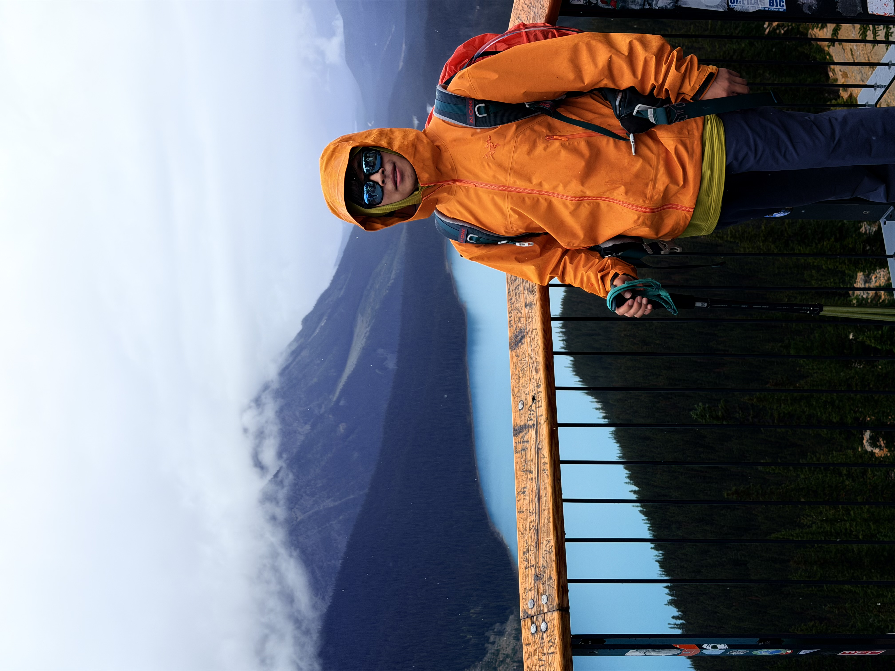

About Me
Hello! I am Yimin Zhu, a Ph.D. student in the Department of Geomatics Engineering at the University of Calgary, Calgary, AB, Canada. My research focuses on hyperspectral image processing, land use and land cover (LULC) mapping, and generative models for inverse problems, including spectral unmixing and wildfire prediction.
Education
University of Calgary
Ph.D. in Geomatics Engineering
Schulich School of Engineering
2025 - 2029
China University of Geosciences (Beijing)
M.Sc. in Surveying and Mapping
School of Land Science and Technology
2021 - 2024
Suqian University
B.Eng. in Geomatics Engineering
2017 - 2021
Experience

Research Lab / Company Name
Research Intern / Engineer / Assistant
Advisor: Prof. / Dr. Name
2025 - Present
Previous Institution
Research Intern / Teaching Assistant
Advisor: Prof. / Dr. Name
2024 - 2025
Projects
Publications
For the complete and up-to-date publication list, please visit my Google Scholar .
-
A Novel Graph-Regulated Disentangling Mamba Model with Sparse Tokens for Enhanced Tree Species Classification from MODIS Time SeriesarXiv, 2026
-
Clustering-Guided Spatial-Spectral Mamba for Hyperspectral Image ClassificationIEEE Geoscience and Remote Sensing Letters , 2026
-
Awards
Hiking & Outdoors
Outside of research, I enjoy hiking and exploring the Canadian Rockies. Here are some moments from my outdoor adventures.
